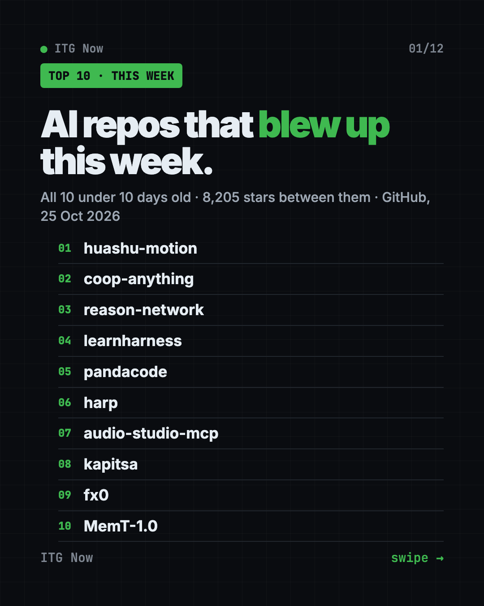
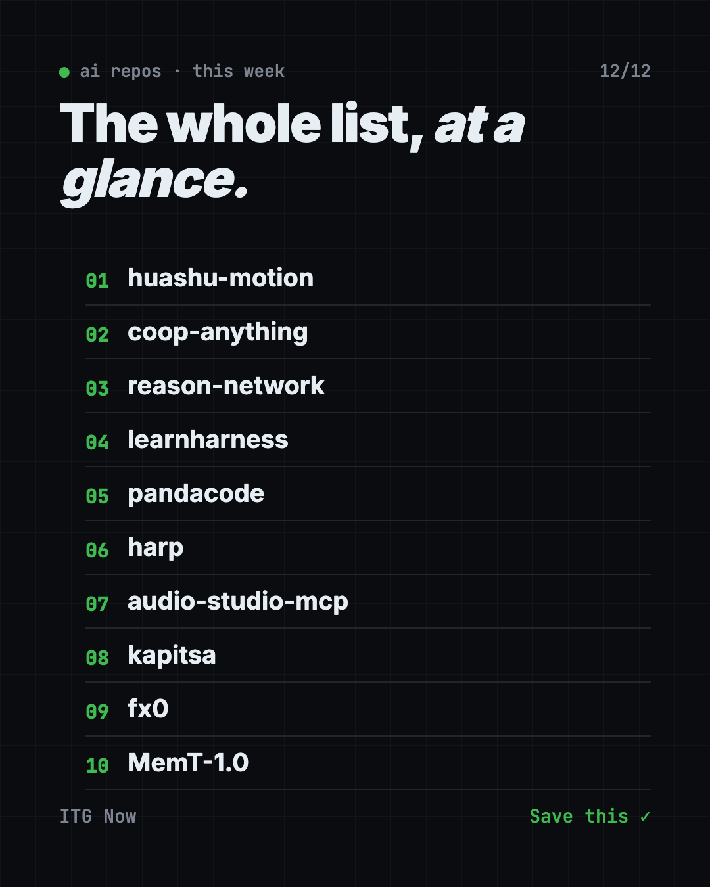

Home › Tools and repos › GitHub trending this week
AI Repos That Blew Up This Week: 10 New Picks (Oct 2026)
- Published 25 Oct 2026
- 7 min read
- By the ITG Now team
In this guide (14)
- Key takeaways
- AI repos that blew up this week at a glance
- 1. huashu-motion: a launch video from your coding agent
- 2. coop-anything: play solo games with friends
- 3. reason-network: coding agents that talk to each other
- 4. learnharness: an AI tutor that checks what you know
- 5. pandacode: a calm home for your coding agents
- 6. harp: one sidebar for many agents
- 7. audio-studio-mcp: music and sound effects from a plain ask
- 8. kapitsa: fast local AI on your Mac
- 9. fx0: describe a page and get it
- 10. MemT-1.0: a model that remembers
- How we picked these repos
- FAQ
These are the AI repos that blew up this week on GitHub. All 10 were created between 16 and 20 October 2026, and together they gathered more than 8,200 stars by 25 October.
A GitHub star is like a bookmark. When a brand new project gets hundreds of them in a few days, people clearly want what it does. Below you get what each repo does, who it is for, and the honest catch from its own README. Not all of them are free to use: we say where you pay.
Key takeaways
- huashu-motion leads with 1,614 stars. Your coding agent makes a launch video, music included.
- coop-anything turns single-player PC games into co-op games you can play with friends.
- Four repos help you run or connect many coding agents at once: reason-network, pandacode, harp and kapitsa.
- learnharness and fx0 need paid AI use. MemT-1.0 has a non-commercial license.

AI repos that blew up this week at a glance
| # | Repo | Stars (25 Oct) | What it does | The catch |
|---|---|---|---|---|
| 1 | alchaincyf/huashu-motion | 1,614 | Launch videos made by your coding agent | Only tested on Macs so far |
| 2 | cranebeaker/coop-anything | 1,245 | Adds co-op to single-player PC games | Everyone needs the game |
| 3 | reason-machines/reason-network | 1,204 | Teammates' coding agents can message each other | Needs a free Reason account |
| 4 | amosblomqvist/learnharness | 1,191 | AI tutor for hard topics | Your own paid AI key |
| 5 | aicodeking/pandacode | 631 | Calm desktop app for many coding agents | Bring your own agent plans |
| 6 | dominikmartn/harp | 606 | One sidebar for many Claude Code and Codex agents | Mac only, unofficial Warp fork |
| 7 | kanaworksai-hue/audio-studio-mcp | 481 | Music and sound effects on your own computer | Needs a strong Mac or NVIDIA PC |
| 8 | nace-ai/kapitsa | 442 | Fast local AI models on a Mac | Apple silicon Macs only |
| 9 | vercel-labs/fx0 | 399 | Describe a page, an agent writes it | AI use billed to your Vercel team |
| 10 | MemTensor/MemT-1.0 | 392 | Research model with built-in memory | Non-commercial license |
Star counts were checked on GitHub on 25 October 2026. Every repo was under 10 days old on that day.
1. huashu-motion: a launch video from your coding agent
huashu-motion lets your coding agent make a product launch film, with music. You can click a frame to change it.
Who it's for: people launching an app who can't edit video.
The catch: the README says it has only been tested on Macs so far.
If you like the idea of video made from code, our HyperFrames guide shows a similar tool step by step.
2. coop-anything: play solo games with friends
coop-anything lets you point an AI coding agent at a single-player PC game. The agent then builds a co-op mode so friends can join.
Who it's for: gamers who want to play a solo game together.
The catch: everyone needs a copy of the game, and some games take many hours of agent work. Mods made by the community are not checked by anyone, so be careful what you install.
3. reason-network: coding agents that talk to each other
reason-network lets the coding agents on your teammates' computers see and message each other. Messages are encrypted.
Who it's for: teams where everyone uses Claude Code, Codex or Cursor.
The catch: you sign in with a free Reason account to make a network.
4. learnharness: an AI tutor that checks what you know
learnharness first checks what you already know. Then it teaches a hard topic one step at a time.
Who it's for: students and anyone learning something difficult.
The catch: you bring your own AI key and pay that provider for use. For another AI tutor, see our DeepTutor guide.

5. pandacode: a calm home for your coding agents
pandacode is a desktop app that runs Claude Code, Codex and other coding agents side by side.
Who it's for: developers who juggle several coding agents.
The catch: no agent plans are included, so you use your own. macOS may also warn you that the app is unverified when you first open it.
6. harp: one sidebar for many agents
harp runs many Claude Code and Codex agents in one sidebar. It flags the agent that is waiting for you.
Who it's for: developers running lots of agents at once.
The catch: it is Mac only, and it is an unofficial fork of the Warp terminal.
7. audio-studio-mcp: music and sound effects from a plain ask
audio-studio-mcp makes background music and sound effects on your own computer. You ask for them in plain words in Claude Code or any app that supports MCP, a standard way to plug tools into an AI helper.
Who it's for: game makers and video editors.
The catch: it needs an Apple silicon Mac, or a Windows PC with an NVIDIA graphics card with 8 GB of memory or more.
8. kapitsa: fast local AI on your Mac
kapitsa runs Qwen, Nemotron and Flint AI models fast on your own Mac, for coding agents. Your code stays on your computer.
Who it's for: Mac users who want local AI for coding.
The catch: it works only on Apple silicon Macs (M1 or newer) with macOS 14 or later.
9. fx0: describe a page and get it
fx0 is a small design agent from Vercel Labs. You describe a web page, and an AI agent writes it as one HTML file.
Who it's for: anyone who wants a quick page design.
The catch: you sign in with Vercel, and AI use is billed to your own team.
10. MemT-1.0: a model that remembers
MemT-1.0 is a research AI model with built-in memory. It keeps past history without rereading it every time.
Who it's for: AI researchers and builders.
The catch: the license is non-commercial, so it is not open source in the usual sense. It runs on Linux with NVIDIA graphics cards.
How we picked these repos
We looked at new AI repos on GitHub and ranked them by stars on 25 October 2026. We kept only repos under 10 days old. We skipped an adult repo, a jailbreak-prompt repo and a TV app that has nothing to do with AI. We also checked for fake stars: forks, contributors, issues and account age all looked normal for real projects.
FAQ
What are the AI repos that blew up this week?
The top three were huashu-motion (launch videos by your coding agent), coop-anything (co-op for solo games) and reason-network (coding agents that message each other). The full list of 10 is above.
Are all of these repos free?
Most have open-source licenses, but not all are free to use. learnharness needs your own paid AI key, fx0 bills AI use to your Vercel team, pandacode needs your own agent plans, and MemT-1.0 has a non-commercial license.
Do I need to know how to code?
For most of them, a little. Several are made for people who already use coding agents like Claude Code or Codex. huashu-motion and coop-anything are the friendliest ideas for non-coders, but you still install them from GitHub.
Which ones work on Windows?
audio-studio-mcp works on a Windows PC with an NVIDIA graphics card. harp and kapitsa are Mac only, and huashu-motion has only been tested on Macs so far. Check each README before you install.
Keep reading

Trending GitHub Repos October 2026: The Top 5 So Far
The trending GitHub repos of October 2026 so far: a free Photoshop-style editor, an AI art studio, a big AI model for gaming PCs and more, explained.

Trending GitHub Repos This Week, Oct 5 2026: The Top 5
Trending GitHub repos this week Oct 5 2026: Matt Pocock's skills, the openGym workout tracker, e2e testing, HyperFrames video and claude-mem memory.

GitHub Trending September 28, 2026: Hindsight and Paperclip
GitHub trending September 28 2026: Hindsight, Paperclip, NVIDIA's OpenShell and a free 542-lesson AI course, with setup steps for each.